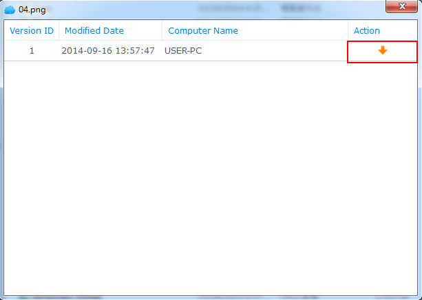

总览
Cloud Station 不仅是一款复杂的跨平台同步软件，用户还可将其用作更智能的备份个人计算机工具。以下是将 Cloud Station 用作备份工具的好处。首先，实时复制提供了更好的 RPO，由于一个重大的意外，在较短时间内数据就可能从您的 PC 上丢失 (无法还原)。它不仅是即时完成的，而且与传统的备份方法相比（在特定时间内使用大量带宽），还能够帮助您大幅节省带宽。通过在 PC 客户端上设置文件大小或文件类型，您可轻松过滤同一文件夹内不需要备份的文件。Cloud Station 还可保留多达 32 个单个文件的历史版本，让您从服务器 (NAS) 还原到 PC 客户端。
1. 在 eCore Server 上设置 Cloud Station
- 请使用属于 administrator 的帐户登录 DSM。
- 启动 Cloud Station。
- 如果您未启用用户主目录功能，系统会提示您先将其启用。单击确定。
- 您将被重新引导至用户设置页面。启用用户主目录并单击应用。
- 现在回到 Cloud Station，系统会提示您将其启用。单击是。
- 进入权限并指定可用的 Cloud Station 用户。单击保存。
- 在 eCore Server 设置备份所需的共享文件夹。要进行此操作，请进入控制面板 > 共享文件夹然后单击创建。
- 对文件夹命名并填入相应的详细信息。单击确定。例如，我们将对文件夹命名为 Backup。
- 在权限选项卡中，指定能够访问该文件夹的用户。例如，我们将给予 admin 该文件夹的读取/写入权限。单击确定。
- 进入 Cloud Station > 设置 > 共享，选择 Backup 文件夹并单击启用。


注： QuickConnect 是一种发送服务，该服务可让您从本地网络外轻松连接到 eCore Server。如果您要在离家或离开办公室时同步文件，我们建议您进入控制面板 > QuickConnect 设置 QuickConnect。


2. 在 Windows PC 上设置 Cloud Station
按步骤在 PC 或 Mac 上设置 Cloud Station
2.1 对于 PC
- 进入 Cloud Station > 概述并单击下载按钮。
- 单击该按钮可为 Windows PC 下载 Cloud Station。(您还可从 Synology 下载中心下载 Cloud Station。)
- 启动计算机上的安装程序并按说明安装 Cloud Station。
- 安装后，在计算机上运行 Cloud Station。单击立即开始。
- 输入运行 Cloud Station 的 eCore Server 地址（或 QuickConnect ID）、用户名和密码。（您还可单击右侧的搜索图标，Cloud Station 将自动搜索 LAN 中的其它 eCore Server）。单击下一步。
- 选择您要设置任务的方式 (我们将在此选择高级设置)，因为我们为备份设置了专门的文件夹。单击下一步。
- 选择计算机上的文件夹以保持与您之前在 eCore Server 上创建的 Backup 文件夹同步。单击下一步。
- 单击完成完成设置。


注： 确认输入的帐户拥有权限（在 eCore Server 上 Cloud Station > 权限授予）。


若要创建另一个任务：
- 进入 Cloud Station > 设置并为此新任务启用共享文件夹。我的实例是照片。 确认您有照片的读取/写入权限。
- 在计算机的 Cloud Station 上进行备份，单击创建。
- 为您的新任务选择 eCore Server。在此，您将选择连接的 eCore Server，因为我们将为同一 eCore Server 创建另一个任务。单击下一步。
- 选择高级设置，并按照向导的其余指示继续进行设置。


2.2 对于 Mac
- 进入 Cloud Station > 概述并单击下载按钮。
- 单击该按钮可为 Mac 下载 Cloud Station。(您还可从 Synology 下载中心下载 Cloud Station。)
- 启动计算机上的安装程序并按说明安装 Cloud Station。
- 安装后，在计算机上运行 Cloud Station。单击立即开始。
- 输入运行 Cloud Station 的 eCore Server 地址（或 QuickConnect ID）、用户名和密码。（您还可单击右侧的搜索图标，Cloud Station 将自动搜索 LAN 中的其它 eCore Server）。单击下一步。
- 选择您要设置任务的方式 (我们将在此选择高级设置)，因为我们为备份设置了专门的文件夹。单击下一步。
- 选择计算机上的文件夹以保持与您之前在 eCore Server 上创建的 Backup 文件夹同步。单击下一步。
- 单击完成完成设置。


注： 确认输入的帐户拥有权限（在 eCore Server 上 Cloud Station > 权限授予）。


若要创建新任务：
- 进入 Cloud Station > 设置并为此新任务启用共享文件夹。我的实例是照片。 确认您有照片的读取/写入权限。
- 在计算机的 Cloud Station 上进行备份，单击创建。
- 为您的新任务选择 eCore Server。在此，您将选择连接的 eCore Server，因为我们将为同一 eCore Server 创建另一个任务。单击下一步。
- 选择高级设置，并按照向导的其余指示继续进行设置。


3. 从 Cloud Station 检索数据
如果您意外删除或覆盖一个文件，Cloud Station 可让您轻松取回。
4.1 下载 PC 上同步文件的旧版本
- 单击系统托盘中的 Cloud Station 图标，然后单击该文件夹图标。
- 右键单击您选择的文件，然后选择 Synology Cloud Station > 浏览以前的版本。
- 找您要下载的版本并单击下载图标。 
- 输入文件名并选择要保存该文件的目的地。


4.1 下载 Mac 上同步文件的旧版本
- 单击系统托盘中的 Cloud Station 图标，然后单击该文件夹图标。
- 右键单击您选择的文件，然后选择 Synology Cloud Station > 浏览以前的版本。
- 找您要下载的版本并单击下载图标。
- 输入文件名并选择要保存该文件的目的地。


4.3 下载或还原 Cloud Station 上同步文件的旧版本
- 进入 Cloud Station > 版本历史并选择您之前创建的 Backup 文件夹。
- 选择您要检索的文件，然后单击操作 > 浏览以前的版本。
- 选择您要下载的文件版本，并单击下载。或者，如果您确认要还原选择的版本，单击还原，它将覆盖当前版本。


4. 注意事项
- 以防文件被意外删除或覆盖，请始终保留历史版本。
- 在全局设置中，您可配置当 PC 上的文件删除时从 NAS 重取还是在 NAS 上删除。
5. 进一步保护您的数据
要获得更多保护和备份数据的方法，请单击此外查看教程以详细了解 DSM 提供的其它备份服务。